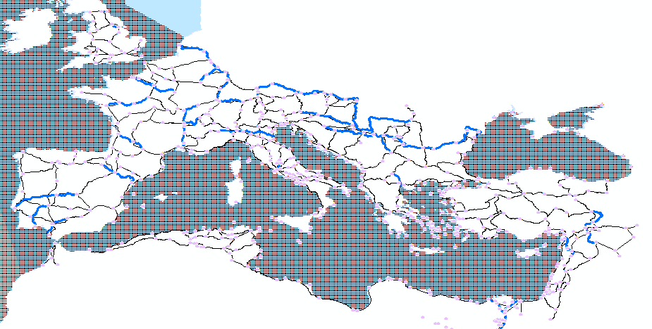
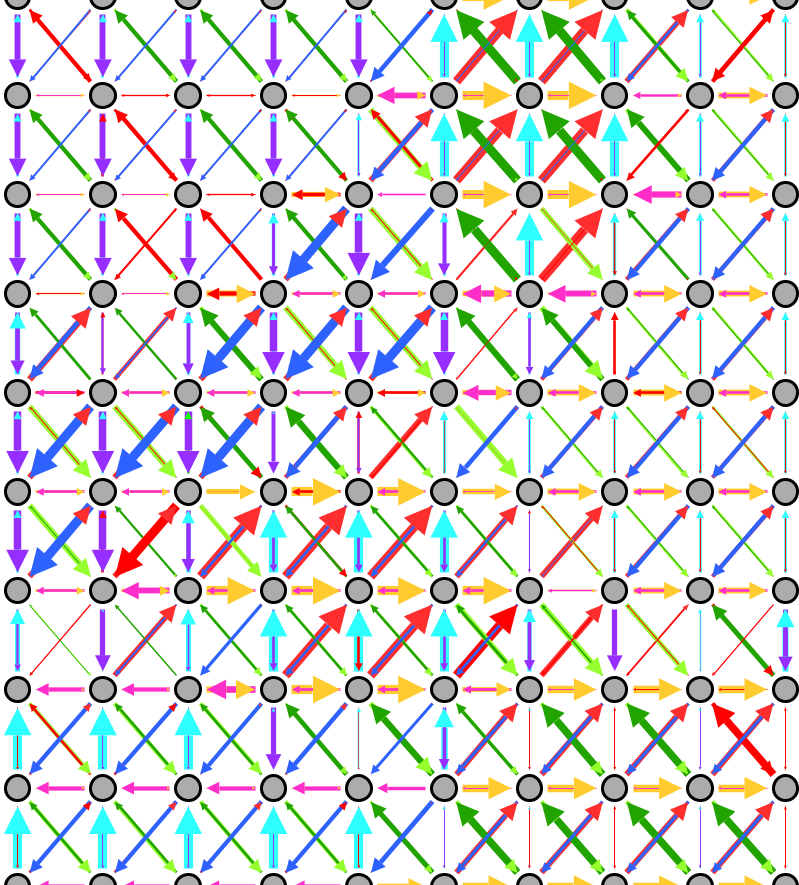
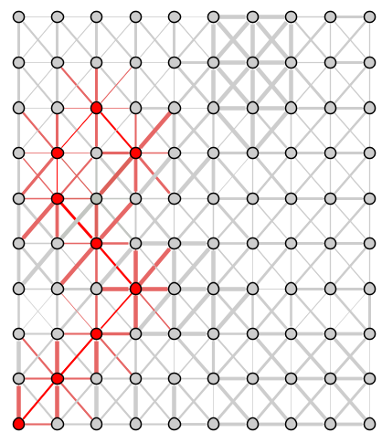
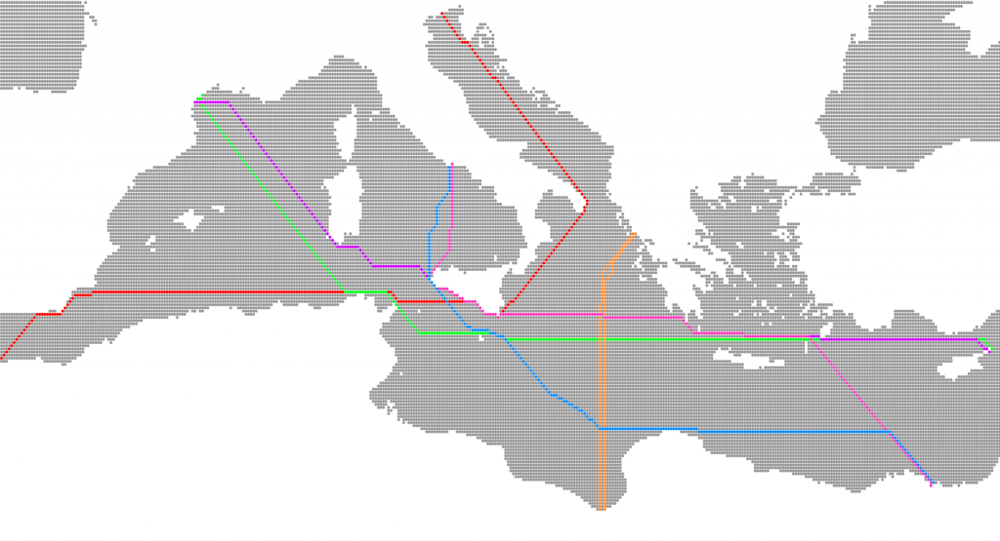
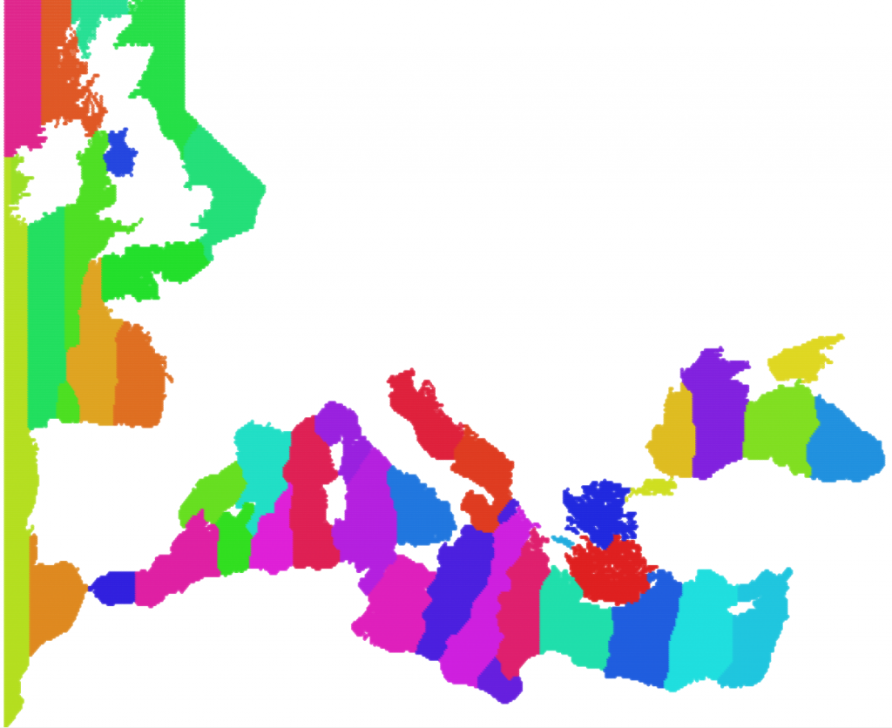
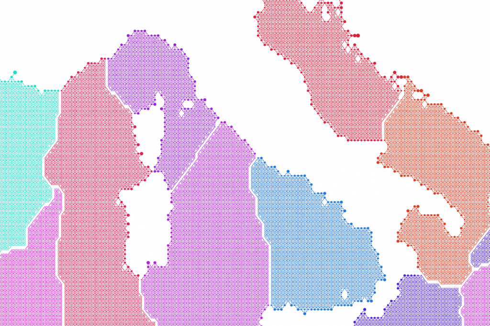
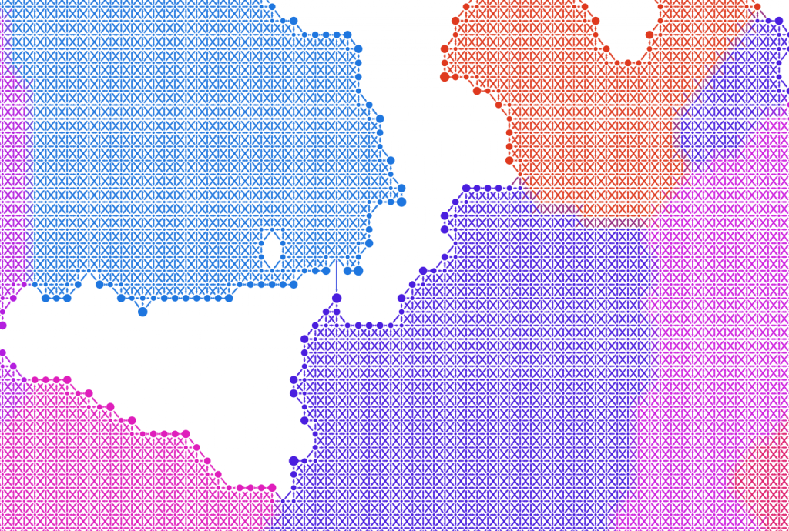
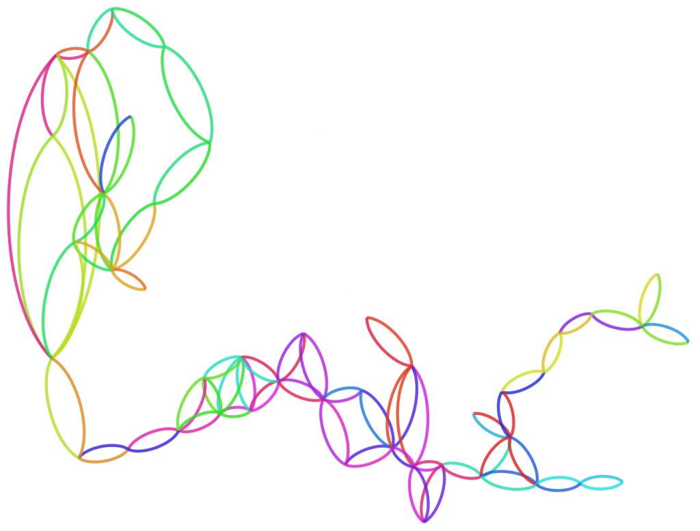

I’ve been more engaged with community detection in networks lately. Community detection, what’s listed as the Modularity option in Gephi’s statistics toolbox and referred to as such in the literature, relies on a variety of methods to try to identify self-similar regions within a network. I’ve only used Gephi to look at Modularity, which relies on the Louvain or Blondel method described here (which provides several useful references to other types of community detection). These algorithms, as described by the authors, work by, “decomposing the networks into sub-units or communities, which are sets of highly inter-connected nodes” such that you have sub-graphs in your network that more highly resemble themselves than they do the rest of the network. Modularity can be measured by comparing the density of links within a module to the density of links between modules, and while that measurement indicates the strength of such communities from a network perspective, it does not obviate interpretation, as demonstrated below.
It’s a seductive tool, because it quickly and easily draws regions in a network, and regions of a network are a form of compression of a very large dataset into a few more easily annotated or theorized units than the thousands or millions of nodes and edges one has to begin with. You can also take these sub-graphs and turn them into meta-nodes, visually representing that compression, or deal with them separately (very useful for networks that are so densely connected as to defy easy interpretation of structure). I’ve never quite been comfortable with modularity, despite how straightforward it looks in code, and I’m particularly piqued now that it has proved useful and confounding in two separate network datasets that I’m examining. I’ll focus on the confounding one below.
To properly model the effect of changing wind conditions on sea transport in the Roman Empire, I developed a network cost surface by creating a grid of .1 degree by .1 degree centroids across the study area. That is, to put it mildly, quite a few points.

The hazy gray area is what the resultant 40,000+ points look like zoomed out. Each of these points has a directed connection to the eight points around it, with an ordinal or cardinal distance and the actual length of the connection (for those of you that have forgotten your geography class or, like Stanford, misplaced your geography department, remember that degrees vary in length depending on where they are on the globe). The result, up close, looks like this:
As is immediately obvious, this allows for simple directional costs to be applied that can be modified based on the time of the query (to account for changing winds by month) to give you a least cost path from one part of the Mediterranean/Black Sea/Atlantic to another.
In some cases, such as the above, such a least cost path involves overshooting the target and coming back around. In the real thing, you see variation such as that found below, which track paths to and from various points, indicating in some cases the same path to and from a point, in other cases minor to significant variation.




 




And if anyone wants to update their World in Flames map using network analysis, it’s worth considering.